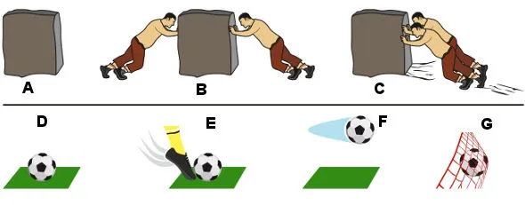

Ensinando Leis de Newton com futebol
As leis de Newton são: Lei da Inércia, Princípio Fundamental da Dinâmica e Lei da Ação e Reação. Essas leis são usadas para determinar a dinâmica dos movimentos dos corpos.
É possível aprender e ensinar as leis de Newton com base nas partidas de futebol. O uso dessa temática é bastante útil para enriquecer o processo ensino-aprendizagem.
1 Lei De Newton: Lei Da Inércia
A primeira lei de Newton, ou a Lei da Inércia, diz que todo corpo deve permanecer no estado de repouso ou em movimento retilíneo uniforme, se a força resultante sobre ele for nula. É possível utilizar a situação da bola de futebol em uma cobrança de falta para ilustrar essa lei.
A – Objeto em repouso B – Um objeto em repouso permanece em repouso porque a força resultante sobre ele é nula C – Um objeto pode mudar o módulo, a direção e o sentido de sua velocidade, pois sofre a ação de uma força resultante D – Um objeto em repouso E – Um objeto mudando o módulo, a direção e o sentido de sua velocidade por sofrer a ação de uma força resultante F – Um objeto permanecendo em movimento G – Um objeto mudando o módulo, a direção e o sentido de sua velocidade por sofrer a ação de uma força resultante Quando a bola está parada, antes da cobrança de uma falta, todas as forças que atuam sobre ela se anulam, de forma que esta permanece em repouso. Após ter sido chutada, caso a força resultante sobre a bola seja tão pequena a ponto de ser desprezada, ela tenderá a se mover em linha reta, com velocidade constante. Além disso, quando em movimento, ao sofrer a ação da força que a rede do gol exerce sobre ela, tende a alterar seu estado de movimento, indo ao repouso.
2ª Lei de Newton – Princípio Fundamental da Dinâmica
A 2ª Lei de Newton, conhecida como “Princípio fundamental da Dinâmica”, nos diz que a aceleração produzida sobre um corpo tem módulo igual à razão da força resultante sobre ele pela sua massa e tem a mesma direção e sentido que essa primeira. Ou seja, quanto maior for a massa do corpo, mais força será necessária para alterar o seu estado de movimento. Observe a figura:

3ª Lei de Newton – Lei da ação e reação
A terceira Lei de Newton fala sobre ação e reação. Ela nos diz que, para toda força de ação em um corpo, surge uma força de reação em um segundo corpo, de mesmo módulo e direção, porém em sentidos opostos. Podemos aplicar essa lei a um chute dado na bola: o pé exerce uma força sobre a bola, e a bola exerce a mesma força sobre o pé, porém com sentido oposto. A bola só é lançada para mais longe porque sua inércia é menor que a inércia do pé do jogador.